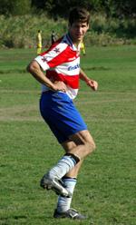

|
Hachioji Park, Sunday 15th June,
Captain Kirk Neureiter ended his footballing career in Japan probably in the same fashion as he started it, marshalling his side to a controlled and efficient victory over a team at least as good as his own individually but overmatched mentally and as a unit.
Rumour has it that Kirk actually started here with the BFC but of course hes known as the face of the Swiss who, with the Hibs, dominated the 1st 3 years of the TML. BFC currently sit atop the greasy pole but its surely indisputable that Kirk has been the TMLs MVP over its 1st 5 seasons. Hitoshi Ono would be the only other to run him close, I would think.
I hope the Swiss will survive the break up and on Sundays evidence they continue to uncover solid, technically able footballers like Raffa and Suzuki. The latest off the production line seemingly Daisuke a midfielder in the mould of Dale Nicholls. Picture Dale with a suntan and an alice band if you dare.
They will need a striker though. There was only 1 Swiss that looked like scoring on Sunday and that was the Long Fellow himself. The final score was 1-0 and, as if scripted, the winner blasted home by Kirk. It was not the 1st time Kirk had made mugs of YCAC at a deadball. This time sneakily picking the smallest defender to mark him. As the rest of us were sucked to the near post Dale lofted the ball high and handsome over our heads to Kirk loitering at the back post. The ball was volleyed back along the ground across the valiant dive of the GK and in-off. A good strike but a goal owed mostly to a sharper football brain
No more goals in the game but both teams produced some very decent football in perfect conditions. I personally take a couple of positives from the game. 1. I must be really fit because the 2H seemed like it only lasted 15 minutes and 2. Next time we play the Swiss I might get to win a couple of headers.
Report by Steve Taw
|